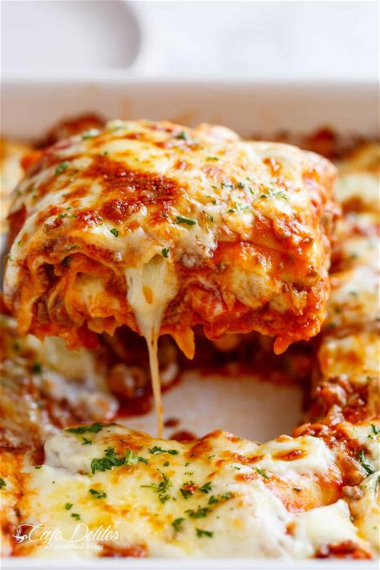

Lasagna

Lasagne A la Viande
Cette recette est facile a realiser que tu sois un pro de la cuisine ou un amateur
et pour cela il faut des ingredients suivants:
Ingrédients
Pour la sauce bolognaise:
- 500 g de viande hachée(boeuf ou mélange boeuf/porc)
- 1 oignon, hachée finement
- 1 carotte, coupée en petits dés
- 1 blanche de céleri, coupée en petits dés
- 2 gousse d'ail, hachées
- 800 g de tomates concassées en boite
- 2c. à soupe de concentré de tomates
- 1 feuille de laurier
- 1c. à café d'herbes de Provence ou basilic
- Huile d'olive
- Sel et poivre.
Pour la sauce bechamel:
- 50 g de beurre
- 50 g de farine
- 500 ml de lait
- Une pincée de muscade (facultatif)
- Sel et poivre
Autres Ingrédients
- 250 g de feuilles de lasagnes
- 150 g de fromage rapé (permesan, gruyère ou mozzarella selon les goûts)
Préparation
Préparer la sauce bolognaise:
- Dans une grande poêle, chauffe un peu d'huile d'olive.
- Ajoute l'oignon, la carotte, le céleri et l'ail, et fais revenir jusqu'à ce qu'ils soient tendres.
- Ajoute la viande hachée et fais-la dorer
- Incorpore les tomates concassées, le concentré de tomates, la feuille de laurier, les herbes, et assaisonne avec du sel et du poivre.
- Laisse le mijoter à feu doux pendant environ 30 minutes, remuant d temps en temps.
Préparer la sauce béchamell:
- Fais fondre le beurre dans une casserole à feu moyen
- Ajoute la farine et remue pour obtenir un roux. Fais cuire pendant 2 minutes, sans laisser la farine brunir
- Ajoute le lait progressivement en fouettant pour éviter les grumeaux. Continue de fouetter jusqu'à ce que la sauce épaississe
- Assaisonne avec du sel, du poivre et une pincée de muscade
Montage des lasagnes:
- Préchauffe le four à 180 dégré celcus (350 dégré F)
- Dans un plat à grain, étale une fine couche de sauce bolognaise
- Dispose une couche de feuilles de lasagne surla sauce.
- Ajoute une nouvelle couche de bolognaise, puis une couche béchamel et saupoudre un peu de fromage râpé.
- Répète l'opération jusqu'à épuisement des ingredients, en terminant par une couche béchamel et une généreuse couche de fromage
cuisson:
- Couvre le plat avec un papier aluminium et enfourne pendant 25 minutes.
- Retire le papier aluminium et laisse gratiner pendant pendant encore 15 minutes, ou jusqu'à ce que lr dessus soit doré.
Servir
Laisse reposer les lasagnes pendant 5 à 10 minutes avant de servir.
bon appetit!